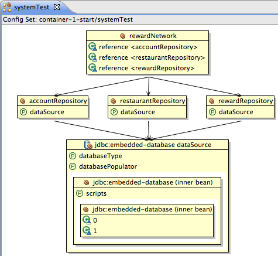

In this lab you will gain experience using the annotation support from Spring to configure the rewards application. You will use an existing setup and transform that to use annotations such as @Autowired, @Repository and @Service to configure the components of the application. You will then run a top-down system test that uses JUnit 4 and Spring's @ContextConfiguration annotation. Finally, if you have time, you will play with Spring's JavaConfig support to achieve the same results.
What you will learn:
How to use some of Spring's dependency injection annotations such as @Autowired
The advantages and drawbacks of those annotations
Specific subjects you will gain experience with:
Annotation-based dependency injection
How to use Spring component scanning
How to use Spring JavaConfig
Estimated time to complete: 30 minutes
Instructions for this lab are divided into four sections. In the first section we will review an existing application configuration and make sure it works correctly. The second section will use Spring's annotations to configure dependency injection of the components of the rewards application. In the third section, you'll configure Spring's component scanning feature to create beans from the application classes automatically. The final optional section will explore achieving the same goals using Spring's JavaConfig support. We will use a JUnit 4 system test throughout to verify that we haven't broken anything. Have fun!
In this lab, we are using a version of the rewards application that is already fully functional. It has repository implementations that are backed by JDBC and which connect to an in-memory embedded HSQLDB database. There is no transactional behavior yet, but we will learning how to define that shortly. In this lab we will rewrite some of the application code to make use of annotations for configuration.
The project features an integration test that verifies the
system's behavior. It's called
RewardNetworkTests and lives in the
rewards package. Run this test by
right-clicking on it and selecting 'Run As...' followed by 'JUnit
Test'. The test should run successfully.
Now review the configuration. If you haven't already done so,
open the Spring Explorer by going to 'Window', 'Show View' and by
selecting the Spring Explorer (sometimes it's not available yet, then
you have to select it from the 'Other' option). Open the Spring
dependency graph from the Spring Explorer tab that just appeared.
Expand 'Beans' and then right-click the system-test
config set and choose Open Graph. This should
give you a nice overview of the dependencies between the different
application and infrastructure components.
|  |
Figure 1: The dependency graph
Now open the application configuration (use CTRL+SHIFT+R to
quickly navigate to it) called
application-config.xml and review the XML that
wires up all the dependencies. As you can see, we're using constructor
arguments. We're including the context namespace and are enabling the
processing of annotations like @PostConstruct and @PreDestroy using
the <context:annotation-config/>
directive.
Remember that the infrastructure components (the DataSource for
example) are located in a separate application configuration file. If
you navigate back to the test you will see that the
setUp() method specifies the
test-infrastructure-config.xml infrastructure
configuration file.
So you've fully reviewed the entire application and you've seen
nothing out of the ordinary. We're now going to wire the individual
components available in the application-config.xml
file using Spring's @Autowired annotations. In
application-config.xml, remove the
constructor-arguments and property definitions for the all beans. In
other words, the only things that'll be left are the bean identifiers
and the implementation types.
![[Tip]](images/tip.png) | Tip |
|---|---|
Note that removing the constructor-arguments on the
|
Try re-running the test. It should fail now. Spring has no idea
how to inject the dependencies anymore, since you have removed the
configuration directive. Next, we'll start adding configuration hints
using @Autowired. Previously, we shortly talked about the
<context:annotation-config/> directives in
application-config.xml. This element also processes
the @Autowired annotations, so we don't need to further modify the
configuration files.
Open the RewardNetworkImpl class and
annotate its constructor with the
@Autowired annotation. This tells Spring
that it should try to automatically find the beans that matches the
types of the constructor arguments to instantiate the class.
| Tip |
|---|---|
Note that this should have fixed the validation error in
Remember that you can quickly navigate from a bean definition to the Java code by pointing the cursor at its class name and pressing F3. |
Now open up the JdbcRewardRepository and
annotate the setDataSource() with that same
@Autowired annotation. This will tell Spring to inject the setter with a
instance of a bean matching the DataSource type.
You can replace the @Required annotation, because @Autowired implies
@Required.
Open up the JdbcRestaurantRepository and
the JdbcAccountRepository and do the same thing
as you did for the reward repository.
Now that you've finished adding instructions to automatically wire the dependencies, try to run the integration test again. You should see that it succeeds.
| Tip |
|---|---|
Remember that if you're using configuration annotations such as @Autowired, you have to enable detection of these in your Spring XML configuration somewhere, otherwise they will be ignored. |
As you might have noticed, we have so far only configured dependency injection using annotations. The instructions to Spring to actually create the application components is still defined in XML. In this section, we will look at how to use Spring annotations to create Spring beans automatically from your classes.
In your application-config.xml file, remove
the <context:annotation-config/> element and
add replace it with: <context:component-scan
base-package="rewards"/>. This configuration directive
turns on a feature called component scanning which looks for all classes
annotated with annotations such as @Component, @Repository or @Service
and creates Spring beans from those classes. It also enables detection
of the dependency injection annotations which you enabled with
<context:annotation-config/>. First re-run the
test to ensure that it still passes.
Now remove all of the bean definitions from the configuration
file, leaving just the <context:component-scan
.../> element. The test will now fail. Spring is now
scanning for classes which make up the components of your application,
but you haven't yet annotated those classes, which is why the test is
failing. So this is the next step. Open the Java types for those bean
definitions that you've just removed
(JdbcRestaurantRepository,
JdbcAccountRepository,
RewardNetworkImpl and
JdbcRewardRepository). Annotate all repositories
with @Repository and the service (the
RewardNetworkImpl) with
@Service. This will allow the component
scanning feature to find these components.
Re-run the test and see that it passes.
In this optional section, we will look at how you could use Java code to create your Spring beans and the dependencies between them. We will also see how you can combine this with @Autowired and component-scanning.
The first thing to do is to remove all instances of the @Autowired, @Service and @Repository annotations from all of your application classes. Instead, we're going to have all of the bean definitions and dependency injection defined in a single Java class. The main advantage of this is that all of the configuration is centralized in one place and you benefit from the stronger type checking of the Java compiler. It also allows you greater scope for flexibility and customization as you are effectively going to be writing a factory method for each bean.
Verify that the test is broken. Now, create a new Java Class in
the rewards.internal package and call it something
like ApplicationConfig. Annotate the class with
@Configuration. This tells Spring that the class represents Spring
configuration and also ensures that it will be picked up by the
component scanning which is already configured.
Next we need to pass in a DataSource that we can inject into our
repository beans. Define a private field of type
DataSource and annotate it with
@Autowired. This ensures that the ApplicationContext will pass in the
DataSource that we defined in our
test-infrastructure-config.xml file.
Next we need to create the bean definitions. A bean definition is simply a method annotated @Bean which returns the instance of a bean. The convention is that the method name will become the bean id in the ApplicationContext. You'll therefore need to create four methods annotated with @Bean: One for the rewardNetwork bean and three others for the repositories. Start by creating method stubs for all four beans. Note that you should use the interface types as the method return types and that the methods don't have to be public but cannot be private.
Once you have the method stubs, you can start wiring things
together. The rewardNetwork() method should simply create and return an
instance of RewardNetworkImpl using new and invoke
the other factory methods when calling the constructor.
Finally, the repositories are coded in a similar way. You just need to create an instance of the repository implementation, inject the dataSource and then return the object. Note that it would have required less coding if we'd chosen to use constructor injection for the dataSources!
Just for fun, re-run the test.